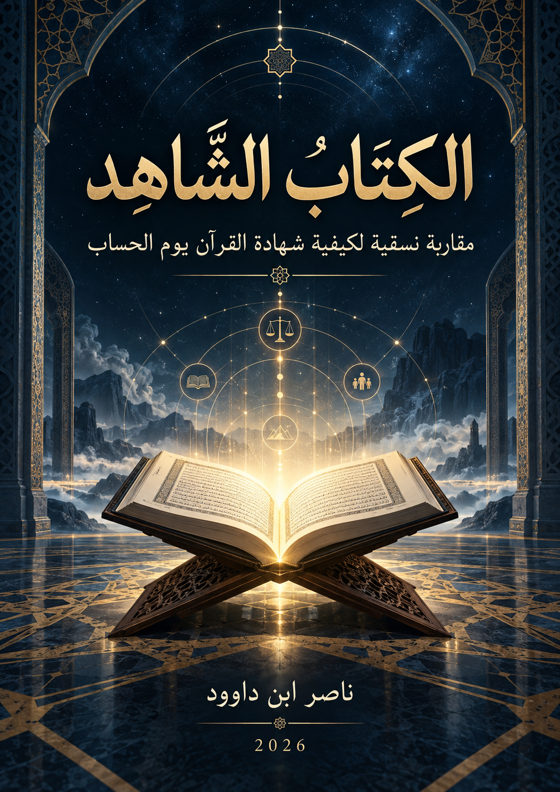

117. الكِتَابُ الشَّاهِد

مقاربة نسقية لحضور الوحي في شبكة المساءلة والإثبات يوم الحساب. لفظ الشاهد في العنوان اصطلاح تحليلي وظيفي، لا دعوى بأن الكتاب المنزل هو سجل الأعمال الأخروي.
قراءة PDF داخل الموقع / Read the PDF on this website
جارٍ تجهيز القارئ… / Preparing the reader…
ملخص الكتاب وفهرسه الموضوعي (مقتطف نصي للفهرسة والبحث)
الكِتَابُ الشَّاهِد
مقاربة نسقية لحضور الوحي في شبكة المساءلة والإثبات يوم الحساب
المؤلف: ناصر ابن داوود
السنة: 2026
الحارس الإبستمولوجي
لفظ «الشاهد» في عنوان هذا الكتاب اصطلاح تحليلي وظيفي، لا ادعاء بأن القرآن سمّى نفسه «الشاهد» أو «الشهيد»، ولا أن الكتاب المنزل هو سجل الأعمال الأخروي. يختبر الكتاب كيفية حضور الوحي في شبكة المساءلة والمعيارية والإثبات، إلى جانب الرسل والشهود وسجلات الأعمال، مع إبقاء العلاقات الدقيقة مفتوحة حيث لا يصرح النص بها. كما أن المصطلحات التحليلية مثل «الإزاحة المرجعية» و«الدين الموازي» نماذج بحثية لا ألفاظ قرآنية مغلقة، ونظام المثاني أداة اكتشاف لا برهانًا مستقلًا.
1 ملخص الكتاب
يدرس هذا الكتاب كيفية حضور الوحي داخل شبكة المرجعية والمساءلة والإثبات في القرآن، انطلاقًا من سؤال لا يفترض جوابه مسبقًا: هل يسمح النص بأن نصف القرآن أو «الكتاب» بأنه شاهد قضائي يوم الحساب، أم أن المدونة تعرض شبكة أكثر تركيبًا تتجاور فيها الرسالة، والرسل، والشهداء، وسجلات الأعمال، والجوارح، والقضاء الإلهي، من غير أن تتحد وظائفها أو مراجعها؟ ومن هنا فالعنوان «الكِتَابُ الشَّاهِد» عنوان تحليلي وظيفي ينظم السؤال، لا دعوى بأن القرآن سمّى نفسه حرفيًا «الشاهد» أو أن الكتاب المنزل هو عين سجل الأعمال الأخروي.
يبدأ البحث بتأسيس الحارس الإبستمولوجي ومنهج QCROS (منهج الاستقراء والضبط والاختبار)، ثم يفكك ألفاظ «الكتاب» و«القرآن» و«الذكر» و«الفرقان» من غير افتراض ترادفها أو انفصالها الأنطولوجي. ويختبر بعد ذلك اتساع مفهوم الوحي، وسلطة الرسول ووظيفة البيان، وحدود الانتقال من ثبوت السلطة الرسالية إلى إثبات مدونة تشريعية ثانية مستقلة محفوظة. ثم ينتقل إلى سؤال الحفظ والاستمرار، وعلاقة الكتاب الحاضر بما أنزل من قبله من خلال التصديق والهيمنة، قبل أن يختبر وحدة الدين مع تعدد الشرعة والتمييز بين الاختلاف والتفرق.
في النصف الثاني من الكتاب تنتقل الدراسة إلى مشهد المساءلة. وتظهر سجلات الأعمال بوظائف إثباتية واضحة، بينما يظهر الوحي والرسالة ضمن شبكة معيارية للمساءلة. غير أن هذا الحضور لا يسمح بدمج المرجعين: REVEALED BOOK = DEEDS BOOK (الكتاب المنزل = سجل الأعمال) بقي NOT ESTABLISHED (غير مثبت)، كما بقي QURAN AS FORMAL ESCHATOLOGICAL COURT WITNESS (القرآن بوصفه شاهدًا قضائيًا رسميًا يوم الحساب) = NOT ESTABLISHED (غير مثبت). في المقابل، حضور الوحي بوصفه إطارًا معياريًا للمساءلة مدعوم بقوة ضمن شبكة من الموارد، من غير أن تُغلق الآلية القضائية الدقيقة.
وتنتهي الدراسة باختبار «الإزاحة المرجعية» (Authority Displacement) و«الهجر الوظيفي» (Functional Displacement) والطاغوت واللغو والتشريع بغير إذن. هذه المصطلحات لا تُقدَّم بوصفها ألفاظًا قرآنية جديدة، بل بوصفها أدوات تحليلية تساعد على وصف أنماط يمكن للنص أن يختبرها أو يضيّقها أو يرفضها. وقد أظهر البحث أن الحضور المادي أو الطقسي للنص لا يساوي بالضرورة الاستجابة لوظيفته، وأن تعطيل السماع أو التدبر أو الاتباع يمكن أن يكون موضوعًا للتحليل، لكن تعريف جذور الهجر واللغو والطاغوت على مستوى المدونة كلها لا يُختزل في نموذج واحد.
من النتائج التي استقرت داخل نطاقاتها: Shared Lexeme ≠ Shared Referent (اشتراك اللفظ ≠ اتحاد المرجع) قاعدة منهجية حاكمة؛ تعدد مراجع «الكتاب» في السياقات الأخروية مدعوم بقوة ومرشح للإغلاق؛ سلطة الرسول ووظيفة البيان ثابتتان، لكنهما لا تثبتان بذاتهما مدونة محفوظة ثانية؛ التصديق لا يستلزم التطابق التشريعي؛ أصل علاقة الهيمنة ثابت مع بقاء تعريفها التفصيلي مفتوحًا؛ UNITARY DIN + PLURAL SHIRʿAH (وحدة الدين + تعدد الشرعة) مغلقة ضمن الشبكة المختبرة؛ والاختلاف لا يساوي التفرق بنيويًا، بينما بقي التعريف النهائي لـ«المنهاج» مفتوحًا.
القيمة الأساسية للكتاب ليست في فرض أكبر عدد من القوانين، بل في ضبط سقف الادعاء. ما ثبت محليًا لا يتحول إلى قانون جذري، وما كان CANDIDATE (مرشحًا) لا يُعرض بوصفه CLOSED (مغلقًا)، وما كان MODEL (نموذجًا) لا يتحول إلى TEXTUAL FACT (حقيقة نصية). ولذلك يستطيع القارئ أن يرى في المتن ليس فقط ما انتهى إليه البحث، بل أيضًا ما رفضه، وما ضيّقه، وما أبقاه OPEN (مفتوحًا)، وما يحتاج إلى Corpus (مدونة نصية) مستقلة قبل أي إغلاق جديد.
2 المقدمة العامة للكتاب
2.1 من عنوان قوي إلى سؤال قابل للاختبار
يحمل عنوان «الكِتَابُ الشَّاهِد» قوة إيحائية قد تتحول بسهولة إلى مصادرة: قد يتوهم القارئ أن الكتاب سيبدأ بإثبات أن القرآن شاهد قضائي رسمي يوم القيامة، ثم يجمع الآيات لتأييد النتيجة. هذا الكتاب يسلك الطريق المعاكس. العنوان يفتح سؤالًا، ولا يمنح الجواب. والسؤال هو: كيف يحضر الوحي في شبكة المساءلة والإثبات، وما حدود العلاقة بين الكتاب المنزل، وسجلات الأعمال، والرسل، والشهداء، والجوارح، والقضاء؟
لهذا لا يكفي التشابه في اللفظ، ولا التجاور في المشهد، ولا قوة الصورة البلاغية لإثبات الهوية. قد يرد لفظ «الكتاب» في سياق الوحي المنزل، وفي سياق كتاب الفرد، وفي سياق كتاب الأمة، وفي سياق لا يُحسم مرجعه من اللفظ وحده. ومن هنا تصبح قاعدة Shared Lexeme ≠ Shared Referent (اشتراك اللفظ ≠ اتحاد المرجع) نقطة حراسة مركزية للكتاب كله.
2.2 وظيفة هذا الكتاب
وظيفة هذا العمل مزدوجة. الأولى موضوعية: بناء خريطة نصية للعلاقة بين الوحي والمرجعية والمساءلة، من لحظة التلقي والبلاغ إلى الحفظ والاستمرار والتصديق والهيمنة والشرعة، ثم إلى مشهد الحساب وشكوى الهجر واختبارات الإزاحة المرجعية. والثانية منهجية: تمكين القارئ من رؤية كيف تنتقل الدعوى من النص إلى الملاحظة ثم الاستقراء والفرضية والاختبار والحالة، بدل تقديم النتيجة بوصفها كتلة نهائية مغلقة.
لذلك يتعامل الكتاب مع «الحالة العلمية» بوصفها جزءًا من المعنى، لا ملحقًا إداريًا. فالقول إن نتيجة ما CLOSED WITHIN CONTEXT (مغلقة داخل السياق) يختلف عن إغلاق الجذر كله؛ والقول CANDIDATE TO CLOSED (مرشح للإغلاق) يختلف عن القانون النهائي؛ وNOT ESTABLISHED (غير مثبت) لا يساوي NONE (غير موجود). هذه الفروق هي التي تمنع التحرير الجميل من ابتلاع الحدود العلمية.
2.3 معمار الكتاب: من المرجع إلى المساءلة
يتكون الكتاب من ثمانية فصول مترابطة. الفصل الأول يؤسس المقاربة والحارس الإبستمولوجي ومسار QCROS ونظام المثاني بوصفه أداة اكتشاف لا برهانًا مستقلًا. والفصل الثاني يفكك العناوين الكبرى: الكتاب، والقرآن، والذكر، والفرقان، ويمنع الترادف المطلق كما يمنع توحيد المراجع بمجرد اشتراك اللفظ.
الفصل الثالث يوسع النظر إلى هندسة الوحي: يثبت تعدد صور الوحي وسلطة الرسول ووظيفة البيان، لكنه يفصل بين الوحي والتشريع وسلطة الرسول والمدونة المحفوظة. والفصل الرابع يسأل عن الحفظ والاستمرار والبلاغ الممتد، ويختبر أي وعاء تلتقي فيه هذه الخصائص دون أن يحول عدم إثبات مدونة ثانية إلى نفي لكل توجيه رسالي غير قرآني في زمن الرسالة.